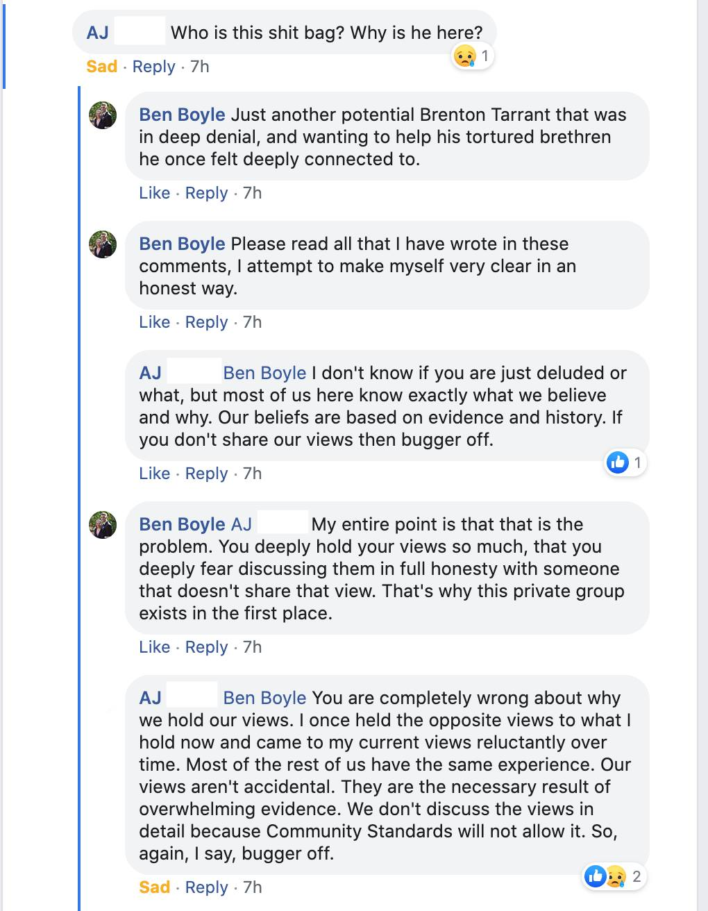

| Post Index | Miscellanea | About |
31 Jul 2020 T1
This is the best I can muster. This has been and will be my life-long struggle.
I see myself as attempting to construct my own Tower of Babel and get people on the same Goddamned page.
Is it somewhat futile? Yes. Are you going to read this and understand? Probably not.
But one must imagine Sisyphus as happy.
You may not believe that my intentions are Good with a capital ‘G’; I assure you they are. Read on with patience and care.
On Facebook, I publicly opened up about darkness in my past, and reached out through the screen to anyone that would listen; I do that again now.
Specifically, I harbored racist ideology during middle school. I picked it up on the internet, where people shared skewed perspectives on American “Black Crime Statistics.” Particularly the citation that “African-Americans, approximately 13% of the population, account for over 50% of homicide crimes”. The people stuck in this line of thinking like to think that these stats prove that Black people are fundamentally different from them and that there is no helping them. They think that Black people are doomed to their current fate, and any attempt to help their situation is not only futile but an attempt to wreak havoc by an international Jewish conspiracy.
Some would call them the Alt-Right, Neo-Nazis, or White Supremacists. They don’t really go by a name, nor fit in the straw box people want to place them in. They have been so far repressed and rejected from the public that they don’t even really have a name to call themselves, nor would they want one.
And that is unfortunate in my opinion because it makes it more difficult to do anything about it. How can you confront something you cannot name and doesn’t want to come out of the dark?
The term “White Fragility” is thrown around, but it is a misnomer. There are self-hating Black and Jewish people in these groups; they struggle with their own identity and “accept” that their people are inferior, or that there is a Jewish conspiracy at large. The real issue is insecurity, fear, and distrust in general.
They are not for or against a specific political party. Originally they supported Donald Trump, but when Trump made kind gestures to Israel they rejected him and mocked MAGA with MIGA (Make Israel Great Again) to suggest that he was now in on the supposed conspiracy.
They don’t have a united community or meeting place: /pol/, /r9k/, Wiz Chan, Discord. They are only united under fear and hatred. They truly are the Elliot Rodgers, Brenton Tarrants, and Dylan Kleybolds waiting to happen.
The key thing to remember, though, is that we are all human, and these people don’t have to become homicidal monsters.
I confronted these “monsters” by going to a private Facebook group of 600+ members and posting an honest warning. I was expecting to get kicked/banned immediately; I’m happy to say that did not happen.




Again, you may not believe that my intentions are good; they certainly didn’t. Many commenters called me out as being part of a conspiracy despite my plea that this was no PSYOP.
You can find more images of my exchanges with commenters in this Google Photos album.
I want you to imagine a world where instead of offering these lost and damned humans the noose they fear, we offer them an embrace and forgive them instead.
I will leave you with one more thing. George Lincoln Rockwell was the founder of the American Nazi Party. He was allowed to speak at many university campuses in his day. Many today worry about “extremists” speaking on campuses and “platforming” those ideas.
Tell me how scary is he really?
I hear a man who passionately wants to help change the world, but just doesn’t trust the “other” and that the neuroplasticity of the brain surpasses any racial genetic difference.
I see an anti-vaxxer not wanting to trust doctors and modern medicine.
I see a flat-earther not wanting to trust NASA imagery and research.
I see an ‘AJ’, desperately in need of help, kindness, and forgiveness.
I see my own Grandfather, stuck in the vitriolic and fear-mongering US news cycle.
The real enemy is conspiratorial thinking because it can lead you to distrust your fellow man and misinterpret any kind act as a manipulative one, a PSYOP.
But I fear it is only me thinking this way.